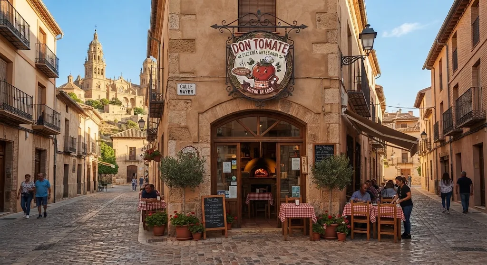

En Don Tomate preparamos cada pizza desde cero en el corazón de Caravaca de la Cruz. Masa artesanal fermentada 48 horas, tomate natural triturado y mozzarella fresca horneados al momento para lograr ese borde crujiente y lleno de sabor que marca la diferencia.
